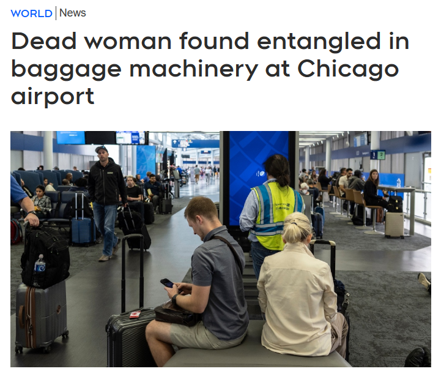
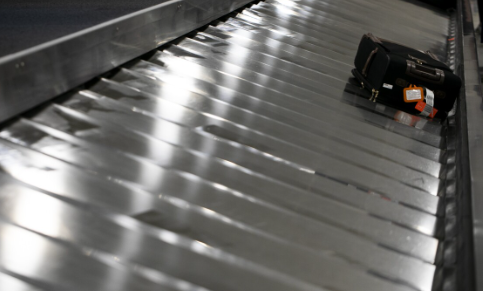
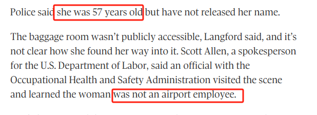
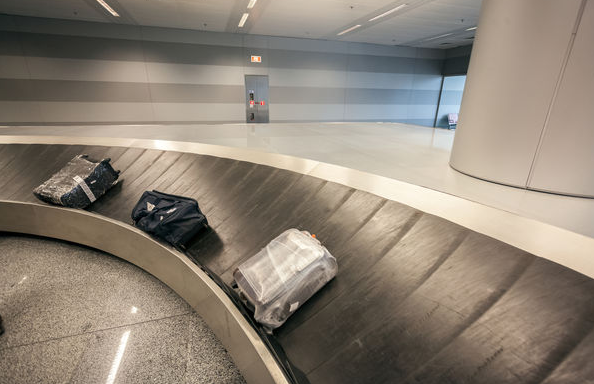
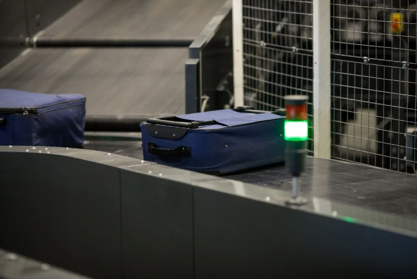

就在今天，一起恐怖的命案震惊了不少人，一名女子被卷进机场行李输送带！等机场人员发现她的时候，已经是尸体了！场面骇人！
根据外媒最新报道，今天上午8点左右，美国芝加哥奥黑尔国际机场5号航站楼，一个行李处理区惊现女子尸体，工作人员发现之后被吓疯了，立马打电话求救。

没一会儿，消防人员和救护车就赶到了，在行李传送带下面发现了这名女子，当时已经没有生命体征了，被宣布当场死亡！
被发现的时候，这名女子整个人都在传送带下，被缠住了，貌似是被困在里面。

一早搭乘飞机的乘客来到机场，就看到大批警方和急救人员堵在机场，现场被划分成“犯罪现场”，被黄色警戒带包围了，还以为是发生什么事件了，都有点慌。
经初步确认，这名死者是一般民众，不是机场相关人员，今年57岁，更多个人信息还有待查明。

为了弄清楚她是怎么被缠在传输带下的，警方第一时间调阅了机场的监控。
今天凌晨2点27分，这名女子自己走进了放行李的房间，但这就是她唯一一次被捕捉到的画面。
至于这人为什么会在凌晨时分独自出现在这里、究竟是出于什么目的、怎么死的，还没有头绪。
这个奥黑尔国际机场有很多大型航空公司在这里运营，每天约有964个直飞航班飞往美国各地，还有129个国际航班起降，今天发生这种事情，可能会影响航班。
但不少人就猜测，这个机场行李的房间是不对外公开的，这名女子被缠在行李输送带下惨死，究竟是意外还是案件？
但其实，传输带“杀人”的事故，已经发生过几次了
2024年3月8日晚，美国乔治亚州，一名21岁的女子艾莉莎（Alyssa Drinkard）在上班的工厂组装零件。
因为上的是晚班，艾莉莎一边戴着耳机听音乐，一边手里的活也没停下。
一个不小心，艾莉莎一只耳机掉了，她弯下身子、低下头去捡耳机。
就在这时，艾莉莎的头发被卷进了传输带，然后就失控了，整个人都被拖了进去！
现场还有很多同事也在加班，亲眼目睹了这恐怖的一幕，纷纷上前想把她就出来，但都没有成功，紧急按了停止键，然后一边打电话报警。
传输带停下来之后，工人们赶紧把机器拆了，还想救人，消防人员及时赶到，把她解救出来，但这时艾莉莎已经没有呼吸了，送医后被宣告身亡。
此前，美国新奥尔良的阿姆斯特朗国际机场，一名26岁地勤人员在搬运行李时也惨遭运输带拖入死亡！

这名地勤人员名叫杰尔马尼·汤普森（Jermani Thompson），是美国廉航——边疆航空（Frontier Airlines）的地勤，这天正在值晚班。
她平时负责的是帮旅客行李装卸及拖曳，这天晚上也照常处理落地行李的运送。
不料，汤普森的头发意外滑落，好死不死被卷进了运输带，紧紧缠住。
汤普森眼看自己头发快被卷完了，立即反抗，想把头发扯出来，结果因用力过猛，大片头皮被硬生生扯下，当场剥落，血流不止！现场全是鲜血，吓坏了不少人。
汤普森随后被赶到的救护车送往医院救治，但最终还是失血过多死亡。
事故发生后，边疆航空取消了当天早上的航班，发布声明，表示对汤普森不幸去世感到十分不舍，且向家属致上哀悼之意，并表示会全力协助家属治丧。
据其亲友介绍，汤普森个性外向、大方，惹人喜爱，从小对篮球情有独钟。母亲更是悲痛欲绝，“她是我的宝贝女儿，人人疼爱。”
2024年2月14日，伦敦希思罗机场2号航厦也发生了类似事故，一名行李搬运工在工作期间，围巾不小心被行李传送带缠绕，整个人当场被拖走，身受重伤。

报道称，当时这名工作人员是在帮从洛根航空苏格兰飞伦敦航班的乘客搬运行李，身边没有其他同事，但有旅客在场，目睹这一幕都吓到了，“这简直就是噩梦！”
不幸中的大幸，这名工作人员虽然受了重伤，但性命保住了。
这种悲剧频频上演，不管是机场工作人员、还是旅客，拿行李时都要注意安全。